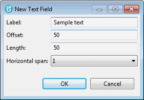
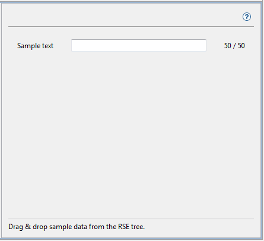
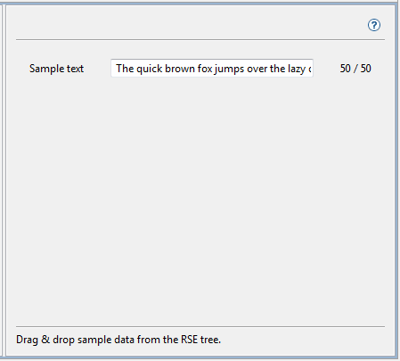
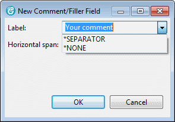
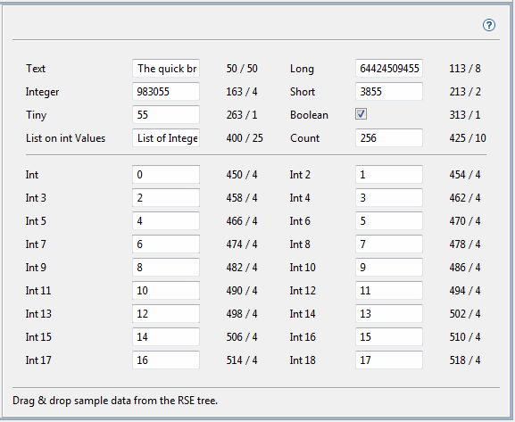

The
Data Space Editor Designer is used to create
editors for your data areas and user spaces. The editors that
you create here are used by the
iSphere Data Area Monitor and
iSphere User Space Monitor to produce a structured display of
the data in the selected object. You could think of an editor as a
maintenance program, a display file and a record layout for your data
space.
The
Data Space Editor Designer is used to create
editors for your data areas and user spaces. The editors that
you create here are used by the
iSphere Data Area Monitor and
iSphere User Space Monitor to produce a structured display of
the data in the selected object. You could think of an editor as a
maintenance program, a display file and a record layout for your data
space.
Here's a demonstration example showing a large data area displayed in two columns:

When you start the designer for the first time, the left panel is empty. You need to create a new editor.
| Click the "Create Editor" icon |

The "columns" spinner specifies the number of columns your editor will have. The example at the top of the page shows a 2-column editors with many fields.
Clicking the [OK] button to create the editor. The new editor is loaded into the right area and the Add Field buttons are enabled.
Add the fields needed to define the data space. For each field you need to specify a label and the offset of the data in the data space object.
| Remember: A data space object is a data area or a user space. |
Example of a 'Text' Field:

Note: Some fields may require additional information, such as length or fraction.

To verify your work, select in the RSE tree the data space object you are defining, then drag & drop it into the designer. The current values show up immediately provided you created the fields correctly:

The data displayed in the first example above comes from the TSTDTAARA1 data area, which that you can find in your iSphere product library.
Build the data area from source member ISPHERE/QDTAARASRC.TSTDTAARA1:
| CRTCLPGM PGM(QTEMP/TSTDTAARA1) SRCFILE(ISPHERE/QDTAARASRC) SRCMBR(TSTDTAARA1) |
| CALL PGM(QTEMP/TSTDTAARA1) PARM('ISPHERE' 'TSTDTAARA1') |
After you have defined the editor, you need to assign it to the data space object(s):
| Assign Data Area | |
| Assign User Space |

| You may also use Drag & Drop from the RSE tree to assign your data space object(s). |
Now when you select the iSphere Data Area Monitor option from the RSE tree, the iSphere Data Area Monitor automatically opens the editor and displays the data.
Note that data areas are being used in these examples, but user spaces are also supported.
See: iSphere Data Space Monitor
Comment/Filler fields can be used to add comments, separators or just blank lines or areas to the dialog to improve readability:

For comments, enter the comment you want to be displayed on the screen. These special values are used to create a horizontal separator or a blank area:
| *SEPARATOR | - | Creates a horizontal separator |
| *NONE | - | Creates a blank area |
The following example shows a more complex editor with a separator below "List of Integer Values":

You can assign more than one editor to a data space object. This is useful if you want to see just a subset of the data in the object. For example a data space may store a huge amount of data, but when you work on one task you want to see one subset of the data and for another task a different subset is needed. Create as may editors as you need and select the right one when starting the monitor.
The editors that you create with the designer are stored in directory:
| [workspace]/.metadata/.plugins/biz.isphere.core/dataSpaceEditors |